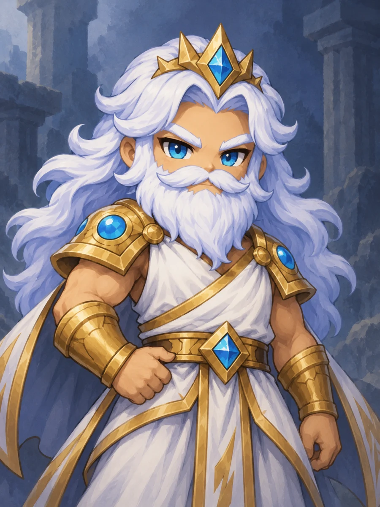
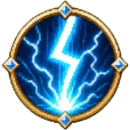
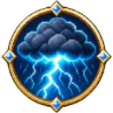
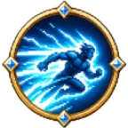
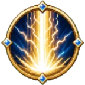

번개를 다루는 신ZEUS
제우스
끝없는 통치에 지루해진 올림포스의 왕. 새로운 유희를 찾아 아레나를 열고, 모두에게 자신의 규칙을 강요합니다.
- 전투 스타일
- 번개로 견제하고 폭풍으로 몰아붙이는 중장거리 압박형.
- 고유 능력
- 제우스의 격노 — 격노가 쌓일수록 공격이 강해지고 스킬을 더 자주 사용할 수 있습니다.
제우스, 이렇게 플레이해보세요
- 번개 창으로 견제. 상대가 어느 방향으로 피하는지 살펴보세요.
- 폭풍 구름으로 압박. 상대가 피해야 할 공간을 만들고 번개 이동으로 거리를 조절하세요.
- 회피가 빠지면 신의 심판. 상대의 이동 스킬이 돌아오기 전에 궁극기를 노려보세요.
4개의 특수 스킬 스킬을 누르면 설명이 열려요

공격번개 창
번개 투사체로 상대의 빈틈을 노립니다.

영역폭풍 구름
폭풍 구름으로 상대를 압박하고 움직일 공간을 좁힙니다.

이동번개 이동
빠르게 위치를 바꿔 위험을 피하거나 공격 기회를 만듭니다.

궁극기신의 심판
강력한 번개 심판으로 승부를 뒤집을 순간을 노립니다.